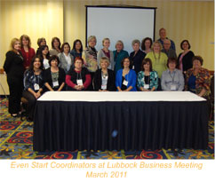
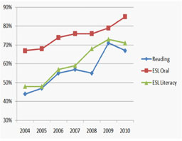
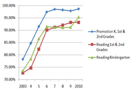
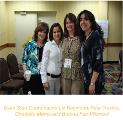

Advocacy Outreach
200 Depot Street,
P. O. Box 169, Elgin,
Texas 78621
Phone 512 281-4180
FAX 512 281-9599
TEXAS Adult & Family Literacy QUARTERLY
Volume 15, No. 3, April 2011Even Start Makes its Mark in Texas
by Elizabeth Thompson
Texas Even Start is a national success story. The program calls for robust and functional collaborations. It is difficult to
administer, yet Texas has led the nation in Even Start outcomes for many years.What is Even Start?
Even Start was the brain-child of William F. Goodling, a former Pennsylvania school principal and U.S. Representative. He knew that parents who are not yet fully literate struggle to support their children in school. He looked around at existing literacy programs, and studied a newly evolving concept of family literacy. He drew up a plan for breaking the cycle of illiteracy and poverty through a comprehensive family literacy program that integrated adult education, early childhood education, parenting education and parent and child interactive literacy activities. That plan, authorized as Title I, Part B, Subpart 3 of the Elementary and Secondary Education Act of 1965 (ESEA), is also known as the William F. Goodling Even Start Family Literacy Program.The program was first authorized in 1988, and its administration was moved to individual states in 1992. Texas placed the program at the Texas Education Agency where it is administered through a contract with Texas LEARNS. Funding increased and, over time, the number of funded programs in Texas reached 94 in 2004. Funding has subsided in later years, but Texas continued to fund 29 programs in 2011.
Partnerships
Even Start grantees, by definition, are partnerships that must include a local education agency plus one or more institutions of higher learning, nonprofit community-based organizations, or a nonprofit public agency. Partnerships for the purpose of delivering instruction to specific groups of students were unusual when Even Start was created. Texas grantees had to learn how to work with multiple agencies to deliver an integrated program. Programs learned the value of defining roles among partners, the challenges of sharing data and the benefits of expanded services that result when partners work together.Texas Even Start partnerships have included such diverse entities as housing authorities, nonprofit organizations, school districts, Head Start, AgriLife Extension and WorkSource. The strongest and most consistent partner, however, has been federally and state-funded adult education providers.
Even Start provides early childhood education for children beginning in infancy while their parents attend adult education classes. The children are often on-site in the same location as adult education classes. This eases the parent burden of securing childcare, a major barrier to parents accessing adult education.
This, combined with intensive classes, allows parents the opportunity to attend classes and make real progress in adult education classes. Academic success builds student confidence and encourages students to persist even longer. Historically in Texas, Even Start students have continued in their classes at unusually high levels. Improved persistence and improved outcomes meet the performance goals of adult education providers; therefore, partnerships are continually reinforced.
Long Range Results for Adult Participants
The first long range results to be quantified on a statewide basis came in a 2005 survey of former Even Start parents. Principal Investigator for the project was Don Seaman, Ph.D., Texas A&M University.Once the data were collected from 20 Even Start programs, an impressive 487 adults had responded to the survey. It had been an average of 2.6 years since the respondents left Even Start. The majority of respondents, 83%, were Hispanic while 17% were other ethnicities. Average parent age at time of the study was 31.
What respondents had to say about Even Start was surprising. They reported continued use of literacy activities in the home, gains in employment and reductions in reliance on public assistance. The continued use of literacy activities in the home directly meets a goal of Even Start. Even Start legislation, however, resides in the Elementary and Secondary Education Act. That act addresses literacy, not employment or reliance on public assistance, yet the respondents reported significant workforce gains and reduced use of public assistance.
You can learn more about Dr. Seaman's study by visiting http://www-tcall.tamu.edu/research/esfol04-05.html, Follow-Up Data on Parents in Even Start Programs in Texas, 2004 and 2005.
Adult Reading Results
The next examination of parent progress over time in Even Start came recently, when Texas was asked to present its longitudinal data at the annual meeting of Even Start state coordinators in Louisville, Kentucky in April 2011.The graph shows the percentage of students that completed a level in TABE Reading, BEST Literacy and BEST Oral/BEST Plus for each year beginning in 2004 as shown on ACES and TEAMS Participant Gains Reports. The majority of Even Start adult participants have always been English Language Learners. In 2010, 75% of Even Start adult students were English Language Learners.
The steady escalation in completions is a tribute to the effectiveness of local Even Start–Adult Education partnerships. It is interesting to note that improvements in student performance coincide with the establishment of Texas' regional GREAT Centers for adult education professional development in 2004, the introduction of Adult Education Content Standards in 2007, andnumerous professional development initiatives during this period.
Results for Child Participants
The long range study on adults prompted interest in ascertaining information about Even Start child participants. Dr. Don Seaman went back to the drawing board and created a different research project. This time, data were collected from the fall 2006 administration of the Peabody Picture Vocabulary Test (PPVT). The PPVT is used to measure receptive vocabulary in preschool children. Test scores from 360 children along with corresponding adult education scores from their parents were analyzed. The children were divided into two groups: those who had participated in Even Start for four consecutive months or longer in the 2005-06 year and those that were not enrolled in Even Start in the previous year. Children who participated in Even Start for less than four consecutive months were not included in the analysis.Children who had participated in Even Start for at least four consecutive months had mean test scores 11.6 points higher than children who did not participate in Even Start. The difference was so pronounced that it produced a statistical significance at the .001 level. Put another way, the difference is attributable to Even Start 999 out of 1000 times.
The study revealed a positive relationship between PPVT scores of children and parent's BEST Plus scores. Since such a large percentage of adult students are ESL students, this was an important finding. It meant that children's performance directly related to parents' achievements.
Child Promotion and Reading Over Time
Even Start collects child promotion and reading data annually in TESPIRS. Plotting the results over the period from 2003 through 2010 shows sharp increases in every category.
There were some landmark changes in Texas and in the nation in 2004. Statutory minimum staff requirements became effective December 21, 2004. That change assured that every early childhood teacher working with infants, toddlers or young children had at least an associate level degree. It also elevated the minimum requirements for home visitors and required that program coordinators undergo training in the administration of a family literacy program.
The U.S. Department of Education launched Making Meaningful Changes in Program Design; its first attempt to bring researchbased instruction into program design and instruction. Texas benefitted from this in two ways. Leading national experts were brought to Texas for a three-day intensive workshop with coordinators and early childhood staff. Two years later, the national experts returned to Texas for follow-up training.
Texas instituted an additional week-long Early Childhood Education Institute to bring scientifically-based instruction to the classroom. That institute was presented regionally to maximize participation and its results were immediately visible in classrooms throughout the state.
Real Impact on Families
Individual success stories tell the real impact of Even Start across Texas. Here are a few examples of family successes in Even Start.
- Guadalupe entered Even Start with a ninth-grade education, four children and no knowledge of the English language. She began in ESL Beginning Literacy. Now, she is a mere 20 points in reading from earning her GED. She can read a book to her nine-year-old child in English and she can help her eighthgrade daughter with homework. As soon as Guadalupe earns her GED, she plans to pursue an associate's degree in early childhood education. Guadalupe shared that Even Start has helped her as a mom, a student, and a partner. Guadalupe sums up her experience by saying, "It is a wonderful program that opens the door for a better life with many windows teaching you this and that."
- Even Start children reach and sustain on-level or above academic performance. You will find Even Start children throughout the state participating in spelling bees, pre-AP high school classes, earning reading awards, becoming members of the National Honor Society and earning college scholarships. Diego of Rosenberg, Texas, not only became the first in his family to attend a university; he earned a scholarship from Florida State University and actually took advantage of that scholarship.
- When Irma entered Even Start without a high school diploma, she was a wife, a mother of a young child, and a guardian of a younger sister. She was a dedicated student who gained spectacular results. Those results didn't stop once she earned her GED. Today, Irma is an honors graduate with a certification in Medical Assisting. She is successfully working as a medical assistant, and she and her husband built a home.
Even Start has made a difference for thousands of families in Texas. Those changes will positively impact their families for generations. We are fortunate to have had such a program in Texas.
* * *
From:TCALL is a Center of the College of Education and Human Development at Texas A&M University, housed in the Department of Educational Administration and Human Resource Development. TCALL was created in 1989 by the Board of Regents at Texas A&M University with the purpose of helping to reduce the incidence of adult illiteracy in Texas. As the state literacy resource center, TCALL's purpose has evolved into responding to the needs of those who provide literacy services to Texas’ adult literacy and family literacy learners.